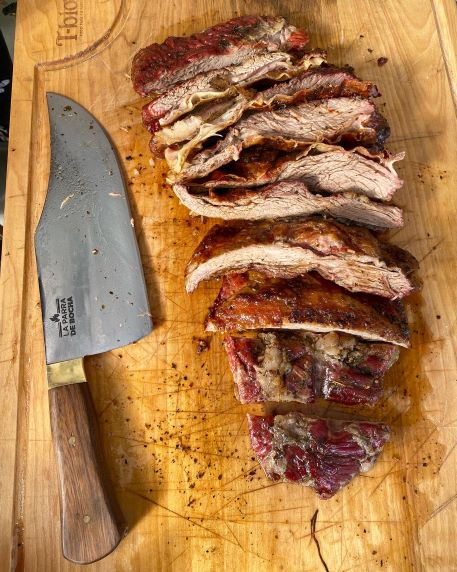
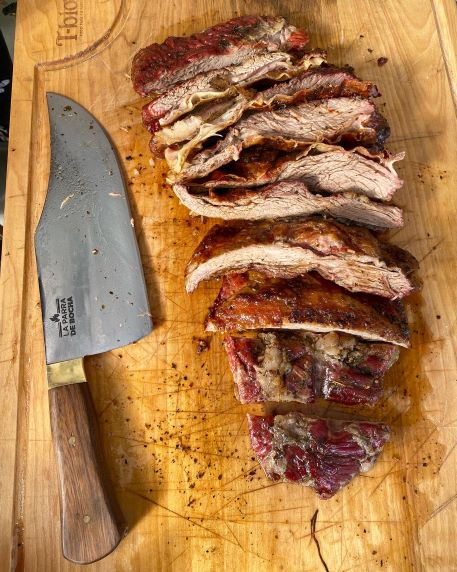

Galeria
Chinchus
@laparradebocha Dame los chinchus más crocantes que tengas 🔥😍 #asmr #asmrsounds #asmrvideo #asmrtiktoks #asmrfood ♬ sonido original - La Parra de Bocha
Los chinchulines son uno de los componentes más importantes de la parrilla argentina, uno de los que se echan a las brasas primero y son muy apreciados por los amantes de la gastronomía del sur, aunque también son famosos en Paraguay y Uruguay. Pero, ¿qué son exactamente? Se utiliza el término “chinchulín” para referirse al intestino delgado del ganado vacuno. En Argentina, se utiliza la palabra “achuras” para las vísceras que se cocinan a la parrilla, y los chinchulines forman parte de esas achuras en la parrilla argentina.
Provoleta
@laparradebocha PROVOLETA GOURMET? 😅🔥 #laparradebocha #asado #parrilla #argentina #bbq #barbecue #foryou #viral #foodie #tiktokfood #foodlover #asador #provoleta #gourmet ♬ Taste It - Ikson
La Provoleta es una rodaja de queso para asar a la barbacoa que rara vez falta en un buen asado argentino. Su principal característica es un sabor marcado, salado e intenso, con una textura exterior muy crujiente y otra interior suave y blanda.

 
